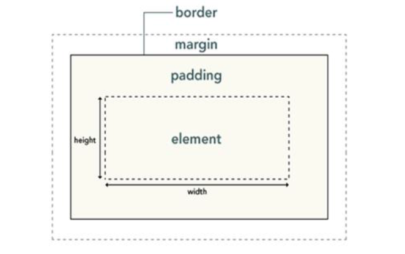

将样式定义在单独的.css的文件里，link和@import都可以在html页面引入css文件。有link和@import两种方式，导入方式如下：
link方式：
<link rel="stylesheet" type="text/css" href="aa.css">
@import方式：
<style type= "text/css">
@import "aa.css";
<style>
link和@import两种导入css文件的区别：
CSS使用层叠的原则来考虑继承、层叠次序和优先级等重要特征，从而判断相互冲突的规则中哪个规则应该起作用。
继承性是指，许多CSS的样式规则不但影响选择器所定义的元素，而且会被这些元素的后代继承。
层叠性是指，当一个Web页面使用多个样式表，多个样式表中的样式可层叠为一个。在多个样式表之间所定义的样式没有冲突的时候，浏览器会显示所有的样式。
优先级是指，当发生样式定义冲突时，浏览器首先会按照不同样式规则的优先级来应用样式。CSS样式的优先级如下所示(说明：数字3拥有最高的优先权):
同等优先级下，以最后定义的样式为准，important比内联高。
CSS中可以继承的属性如下：
元素选择器是最常见的CSS选择器，即，文档的元素就是最基本的选择器。选择器通常是某个HTML元素，比如：<p><h1><em><a>等，甚至可以是<html>元素本身。
类选择器用于将样式规则与附带class属性的元素匹配，其中该class属性的值为类选择器中指定的值。使用类选择器时，首先需要定义样式类，其语法为：
.className{...}
所有能够附带class属性的元素都可以使用此样式声明。只需要将class属性的值设置为“className”,则可以将类选择器的样式与元素关联。
在实际使用时，如果需要为某种元素定义样式，则往往使用元素选择器；如果要应用样式而不考虑具体设计的元素，最常用的方法就是使用类选择器。
CSS中，除了默认的流定位方式以外，还有如下几种定位机制：浮动定位、相对定位、绝对定位和固定定位。
浮动定位是指将元素排除在普通流之外，并且将它放置在包含的左边或者右边，但是依旧位于包含框内。
相对定位将元素相对于它在普通流中的位置进行定位。
绝对定位是指将元素的内容从普通流这两个完全移除，并且可以使用偏移属性来固定该元素的位置。
固定定位是指将元素的内容固定在页面的某个位置。
可以使用display属性定义建立布局时元素生成的显示框类型。
在DIV设计中，使用display：none属性后，HTML元素(对象)的宽度、高度等各种属性值都将“丢失”；而使用visibi：hidden，HTML元素(对象)仅仅是在视觉上看不见(完全透明)，而它所占据的空间位置仍然存在，也即是说它仍具有高度、宽度等属性值。
CSS盒子模型也叫做款模型，具备内容(content)、填充(padding)、边框(border)、边界这些属性。在CSS中，每一个元素都被视为一个框，而每个框都有三个属性：
盒子模型的结构如下图所示：
由上图可以看出，width和height指的是内容区域的宽度和高度。增加内边距、边框和外边距不会影响内容区域的尺寸，但是会增加元素框的总尺寸。
因此，如果在一个具有边框的元素中放置文本，往往需要设置一些内边距，以便文本的边缘不要接触边框，这样更便于阅读。而外边距则可以在多个元素之间创建空白，避免这些框都挤在一起。因此，在设计页面时，经常会使用padding属性和margin属性来设置页面的布局。但是，必须要注意的是，一旦用了padding属性或者margin属性设置了元素的边距以后，会增加元素在页面布局这中所占的面积。
CSS3提供了大量伪类选择器，浏览器对于有些伪类选择器的支持还不太好。目前，常用的伪类选择器有：
一般建议在使用背景图像的同时提供background-color属性，并且将其设置为和图像主要颜色类似的颜色。这样，如果正在加载页面，或者因为各种原因无法显示背景图像时，页面可以使用这种颜色作为背景色。
给div设置一个宽度，然后设置元素的左右外边距为auto，如：margin:0 auto;则可以实现div的居中显示
对于浮动元素，设置其左右外边距为auto是无效的。此时，如果需要设置其居中显示，可以：
<div style="margin:0 atuo;">
<div style="float:left;">
</div>
</div>
可以使用font-family属性来指定文本的字体，代码如下所示：
font-family:name/inherit;
此时，name为首选字体的名称。如果字体名称有多个单词，即中间有空格，则需要将字体名称用一对单引号或者双引号包围起来。
但是，如果用户机器上并没有安装name所指定的字体，则会显示默认字体。因此，如果可以指定一种替代字体，替代可以和指定不完全相同，相似且不会影响页面的布局，就可以解决问题了。
我们可以为font-family属性指定多种字体，且多种字体之间用逗号隔开，这样可以为页面指定一个字体列表。如果用户机器没有第一种字体，则浏览器会查找字体列表中的下一种字体作为替代字体显示。如果找遍了字体列表还是没有可以使用的字体，浏览器才会使用默认字体显示页面。代码如下所示：
h1{font-family:Georgia,serif;}
因此，我们建议在所有font-family规则中都提供一个通用字体系列。这样就提供了一条后路，在用户机器无法提供与规则匹配的特定字体时，就可以选择一个通用字体作为替换。
在CSS中，任何元素都可以浮动。浮动元素会生成一个块级框，而不论它本身是何种元素。因此，对于内联元素，如果设置为浮动，会产生和块级框相同的效果。
默认情况下(不额外设置表格的显示规则时)，表格按照自动表格布局进行显示，即，浏览器在显示表之前查看每一个单元格，然后基于所有单元格的设置计算表的大小，而列的宽度是由列单元格中没有折行的最宽的内容设定的。此时，单元格的大小会适应内容的大小。
自动表格布局的算法在表格复杂时会比较慢，这是由于它需要在确定最终的布局之前访问表格中所有的内容。在不能提前确定每一列的大小时，这种方式会非常适用。
如果额外设置表格的显示规则，即，设置table-layout属性的值为fixed，这称为固定表格布局。在固定表格布局中，水平布局仅取决于表格宽度、列宽度、表格边框宽度、单元格间距，而与单元格的内容无关。浏览器将使用某列指定的宽度来计算布局(如果给了宽度的话)，并使用该宽度计算该列中所有其他单元格的宽度。
固定表格布局与自动表格布局相比，允许浏览器更快地对表格进行布局。因为如果指定使用固定表格布局，浏览器在接收到第一行后就可以显示表格。如果表格庞大且已经指定了大小，则会加速表的显示。
content属性与:before及:after伪元素配合使用，来插入生成内容，可以在元素之前或之后放置生成的内容。可以插入文本、图像、引号，并且可以结合计数器为页面元素插入编号。比如，代码如下：
body{ counter-reset:chapter;}
h1:before{ content:"第"counter(chapter)"章"}
h1{counter-increment:chapter;}
使用content属性，并结合:before选择器和计数器counter，可以在每个<h1>元素前插入新的内容。
CSS Sprites是一种网页图片应用处理方式，就是把网页中一些背景图片整合到一张图片文件中，再利用CSS的"background-image","background-repeat","background-position"的组合进行背景定位。
其优点在于：
诚然CSS Sprites是如此的强大，但是也存在一些不可以忽略的缺点：
CSS3作为CSS技术的升级版本，着力于模块化发展，将规范分解为一些小的模块，如选择器、盒子模型、列表模型、背景和边框等；并加入了很多新的模块和属性，比如复杂选择器、文字阴影、边框圆角、渐变、过渡、多栏布局、2D/3D转换、动画等。
其中，CSS3提供了一下复杂选择器，用于实现页面复杂情况下的元素选择，如属性选择器、一些伪类和伪元素选择器；渐变用于为元素设置渐变效果的背景；转换可以实现元素的变换，比如位移、缩放、旋转等；过渡可以实现简单的动画效果；而动画属性则可以实现复杂的动画，可以实现逐帧制作动画。
过渡属性transition可以在一定的时间内实现元素的状态过渡为最终状态，用于模拟一个过渡动画效果，但是功能有限，只能用于制作简单的动画效果；而动画属性animation可以制作类似Flash动画，通过关键帧控制动画的每一步，控制更为精确，从而可以制作更为复杂的动画。
CSS reset,又叫做CSS重写或者CSS重置，用于改写HTML标签的默认样式。
有些HTML标签在浏览器有默认的样式，例如：p标签有上下边距，li标签有列表标识符号等。这些默认样式在不同浏览器之间也会有差别，例如ul默认带有缩进的样式，在IE下，它的缩进是通过margin实现的，而Firfox下，它的缩进是由padding实现的。这必然会带来浏览器兼容问题。
因此，在CSS代码中，可以使用CSS代码去掉这些默认样式，即重新定义标签样式，从而覆盖浏览器的CSS默认属性，即，CSS reset。
需要注意的是，在进行样式重写时，不建议使用*选择器进行重写，这样会降低效率，影响性能。
浮动定位是指将元素排除在普通流之外，并且将它放置在包含框的左边或右边，但是依旧位于包含框内。也就是说，浮动的框可以向左或向右移动，直到它的外边缘碰到包含框或另一个浮动框的边框为止。
由于浮动框不在文档的普通流中，所以元素浮动之后，其原有位置不再保留，其它元素的位置会受到影响。
如果需要清除左侧或者右侧浮动元素带来的影响，则可以使用clear属性来设置。另外，包含框内的子元素浮动后，如果包含框没有设置具体的高度，则其高度发生变化，此时，可以使用overflow属性来清除子元素浮动后带来的影响。
浏览器的类型及版本的不同会造成CSS效果不尽相同，因此需要实现浏览器兼容，也可以针对不同的浏览器编写不同的CSS。
目前，各主流浏览器的新版本，对于W3C的标准支持很好，因此，首先保证代码符合W3C的标准，这是解决浏览器兼容问题的前提。
其次，对于某些支持受限的属性，针对不同的浏览器添加相应的前缀，比如：-webkit-、-o-、-moz-
第三，对于IE的低版本，可以编写带有特定前缀的代码，实现版本的识别。比如：
.bb{
background-color:#f00;/*所有识别*/
.background-color:#0F0;/*IE6、7、8识别*/
+background-color:#00f;/*IE6、7识别*/
_background-color:#f00;/*IE6识别*/
}
另外，对于特定的兼容性问题，特殊解决。常见的特殊问题有：